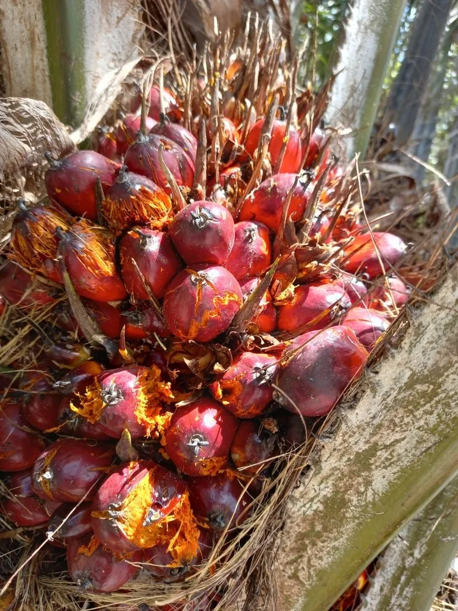

乔木 · 植物界
油棕 Elaeis guineensis

世界重要的热带油料作物，果肉与果仁均可榨油，单位面积产油量居油料作物之首，被称为“世界油王”。
- 分类
- 门被子植物门纲百合纲目棕榈目科棕榈科属油棕属
- 栖息环境
- 海拔 500 米以下的热带地区，喜高温多湿、光照充足
- 地理分布
- 原产西非热带地区，马来西亚、印度尼西亚等国广泛栽培；中国海南、云南等地引种
- 保护级别
- 暂无评估；中国未列入国家重点保护野生植物名录
物种志
油棕为常绿乔木，高可达 10 m，树干粗壮、不分枝，表面有环状叶痕；羽状复叶长可达 7 m，小叶多数、线状披针形，叶柄基部具刺。花期全年，肉穗花序生于叶腋，雌雄同株异序；果实为聚花果，由数百个卵形核果组成，果皮橙红色、富含油脂，果肉可榨棕榈油，果仁可榨棕榈仁油。
油棕原产西非热带地区，马来西亚、印度尼西亚、尼日利亚等国广泛栽培，中国海南、云南、广东等地有引种。它喜高温多湿、光照充足，适宜深厚肥沃、排水良好的热带土壤，定植后 3–4 年开始结果，经济寿命约 20–25 年。单位面积产油量远高于大豆、油菜等油料作物，棕榈油广泛用于食品、肥皂与生物柴油；但油棕种植扩张也带来雨林砍伐等生态问题，可持续棕榈油认证因此受到关注。
形态与习性
- 株高可达 10 m，树干粗壮
- 花期全年，肉穗花序生于叶腋
- 果期定植后 3–4 年开始结果
- 光照喜光，不耐长期荫蔽
- 水分喜湿润，怕积水
- 土壤深厚肥沃、排水良好的热带土壤
- 主要用途棕榈油与棕榈仁油、肥皂与生物柴油原料、食用油
趣味知识
- 油棕的果肉可榨棕榈油，果仁可榨棕榈仁油，一棵树可同时产出两种油。
- 油棕单位面积产油量居油料作物之首，因此被称为“世界油王”。
- 油棕定植后 3–4 年开始结果，经济寿命约 20–25 年。
- 油棕种植扩张会带来雨林砍伐问题，可持续棕榈油认证因此受到关注。